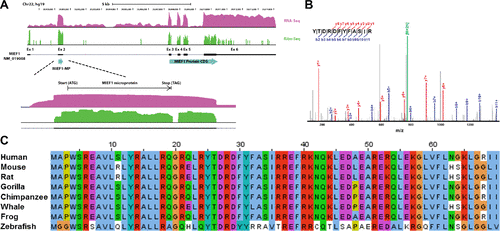
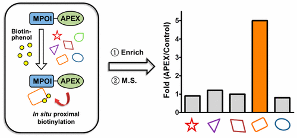
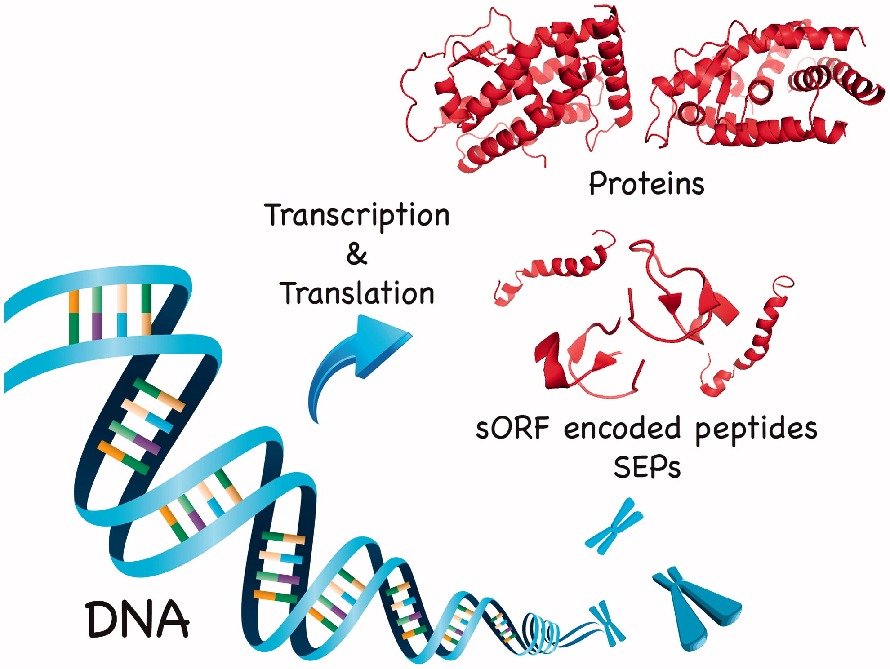

Martinez, T.F., Chu, Q., Donaldson, C., Tan, D., Shokhirev, M.N., Saghatelian, A., Nat. Chem. Biol., 2020, 16, 458. doi: 10.1038/s41589-019-0425-0
Featured in Salk News
Martinez, T.F., Chu, Q., Donaldson, C., Tan, D., Shokhirev, M.N., Saghatelian, A., Nat. Chem. Biol., 2020, 16, 458. doi: 10.1038/s41589-019-0425-0
Featured in Salk News
Chu, Q., Martinez, T.F., Novak, S.W., Donaldson, C.J., Tan, D., Vaughan, J.M., Chang, T., Diedrich, J.K., Andrade, L., Kim, A., Zhang, T., Manor, U., Saghatelian, A., Nat. Commun., 2019, 10, 4883. doi: 10.1038/s41467-019-12816-z
Featured in Salk News
Chu Q., Chang T., Saghatelian, A., Trends Pharmacol Sci., 2019, 40, 716. doi: 10.1016/j.tips.2019.07.009
Tan D., Ertunc M.E., Konduri S., Zhang J., Pinto A.M., Chu Q., Kahn B.B., Siegel D., Saghatelian A. J. Am. Chem. Soc., 2019, 141, 8798. doi: 10.1021/jacs.9b00045
Chu Q., Saghatelian A., Biochemistry, 2019, 58, 1022. doi: 10.1021/acs.biochem.8b01317
Rathore A., Martinez T.F., Chu Q., Saghatelian A., Expert Rev. Proteomics, 2018, 15, 963. doi: 10.1080/14789450.2018.1547194
Rathore A., Chu Q., Tan D., Martinez T.F., Donaldson C.J., Diedrich J.K., Yates J.R. III, Saghatelian A., Biochemistry, 2018, 57, 5564. doi: 10.1021/acs.biochem.8b00726
Muñoz S.S., Li H., Ruberu K., Chu Q., Saghatelian A., Ooi L., Garner B., J. Biol. Chem., 2018, 293, 4071. doi: 10.1074/jbc.RA117.001278
Chu Q., Rathore A., Diedrich J.K., Donaldson C.J., Yates J.R. III, Saghatelian A., Biochemistry, 2017, 56, 3299. doi: 10.1021/acs.biochem.7b00265
Nelson A.T., Kolar M.J., Chu Q., Syed I., Kahn B.B., Saghatelian A., Siegel D., J. Am. Chem. Soc., 2017, 139, 4943. doi: 10.1021/jacs.7b01269
Chen P., Zuo H., Xiong H., Kolar M.J., Chu Q., Saghatelian A., Siegwart D.J., Wan Y., Proc. Natl. Acad. Sci., 2017, 114, 580. doi: 10.1073/pnas.1614035114
D'Lima N.G., Ma J., Winkler L., Chu Q., Loh K.H., Corpuz E.O., Budnik B.A., Lykke-Andersen J., Saghatelian A., Slavoff S.A., Nat. Chem. Biol., 2017, 13, 174. doi: 10.1038/nchembio.2249
Featured in Salk News
Chu Q., Diedrich J.K., Vaughan J.M., Donaldson C.J., Nunn M.F., Lee K.F., Saghatelian A., J. Am. Chem. Soc., 2016, 138, 9473. doi: 10.1021/jacs.6b03463
Featured in Salk News
Zhang T., Chen S., Syed I., Ståhlman M., Kolar M.J., Homan E.A., Chu Q., Smith U., Borén J., Kahn B.B., Saghatelian A., Nat. Protoc., 2016, 11, 747. doi: 10.1038/nprot.2016.040
Wei W., Schwaid A.G., Wang X., Wang X., Chen S., Chu Q., Saghatelian A., Wan Y., Cell Metab., 2016, 23, 479. doi: 10.1016/j.cmet.2015.12.010
Chu Q., Ma J., Saghatelian A., Crit. Rev. Biochem. Mol. Biol., 2015, 50, 134. doi: 10.3109/10409238.2015.1016215
Chu, Q., Moellering, R.E., Hilinski, G.J., Kim, Y.W., Grossmann, T.N., Yeh, J.T., and Verdine, G.L., MedChemComm, 2015, 6, 111. doi: 10.1039/C4MD00131A
Grossmann, T.N., Yeh, J.T., Bowman, B.R., Chu, Q., Moellering, R.E., and Verdine, G.L., Proc. Natl. Acad. Sci., 2012, 109, 17942. doi: 10.1073/pnas.1208396109